Image Processing
This is a research group under the Computer Science and Engineering Department at National Institute of Technology, silchar. This group is dedicatedly working on understanding visual processes and finding solutions for the outstanding problems in visual processing and perception, as well as artificial intelligence, machine learning, Medical Imaging and intelligent systems for a wide variety of applications. This group also focused on pushing the boundaries of AI by tackling the key operational challenges surrounding widespread adoption of AI and enabling AI to become an empowering technology for anyone, anywhere, anytime in the field of Image and Video Processing. Towards this goal, two of the key areas of research interest are scalable AI (through human-machine collaborative design empowered by AI building AI), and transparent and responsible AI (through AI explaining AI), both of which are key to enabling widespread ethical use of AI in the field of Image & Video processing, medical Image processing for real-world societal impact.
Faculty Members:
| 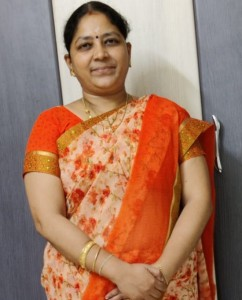 | 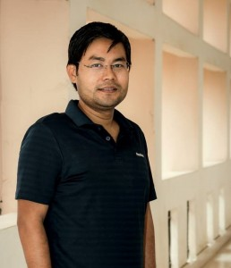 |  |
| Dr. Suganya Devi K | Dr. Dalton Meitei Thounaojam | Dr. Badal Soni |
| Assistant Professor – Grade I | Assistant Professor – Grade I | Assistant Professor |
| E-mail: suganya@cse.nits.ac.in, suganyanits@gmail.com | E-Mail: dalton@cse.nits.ac.in, dalton.meitei@gmail.com | E-mail: badal@cse.nits.ac.in |
| Research Interests: Multimedia, Computer Vision, Image Processing, | Research Interests: Image Processing, Video Processing, Image Hashing, | Research Interests: Image Processing, Image Security,Multimedia security, |
| Pattern Recognition,Biomedical Signal Processing | Machine Learning (Fuzzy, GA, & NN) | Application of Machine Learning,ML in Health Care, Medical Image Processing |
Research collaboration
| 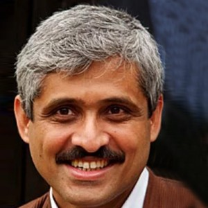 |
| Work : Surgical Oncologist and Director |
| Address: Cachar Cancer Hospital and Research Centre, Silchar, Assam |
 |
| Work : DNB (Neurosurgeon), Head of Neurosurgery |
| Address: Naruvi Hospitals,Vellore |
 |
| Work: Professor of Computer Vision at the Faculty of Sciences and Technologies at Jean Monnet University. |
| Address: 18 rue du Prof. Benoît Lauras, 42000 Saint-Etienne, France |
Doctoral Students
| 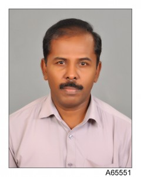 |
| Area of Research: Compressive Sensing, Medical Imaging, Wireless Sensor Networks |
| Email: pksekarksr@gmail.com; k._rs@cse.nits.ac.in |
| Supervisor: Dr. Suganya Devi K |
INTERNATIONAL JOURNALS
1. K. Sekar, K. Suganya Devi and P. Srinivasan,(2022), “Compressed Tensor Completion: A Robust Technique for Fast and Efficient Data Reconstruction in Wireless Sensor Networks,” in IEEE Sensors Journal, vol. 22, no. 11, pp. 10794-10807, 1 June, 2022, https://doi.org/10.1109/JSEN.2022.3169226. [Indexed: SCI, Impact Factor: 3.301] [Q1 in SJR citation index]
2. Sekar, K., Suganya Devi, K. & Srinivasan, P.,(2021), “Energy Efficient Data Gathering using Spatio-temporal Compressive Sensing for WSNs”, Wireless Pers Commun. https://doi.org/10.1007/s11277-020-07922-x. [Indexed: SCIE, Impact Factor: 1.061].
INTERNATIONAL CONFERENCES
1. S. K. Satti, K. Suganya Devi, K. Sekar, P. Dhar and P. Srinivasan, “ICTS: Indian Cautionary Traffic Sign Classification Using Deep Learning,” 2022 IEEE International Conference on Distributed Computing and Electrical Circuits and Electronics (ICDCECE), 2022, pp. 1-7, doi: 10.1109/ICDCECE53908.2022.9792996.[Indexed: Scopus] [Received Best paper Award].
2. Sekar K., Devi K.S., Srinivasan P., Dheepa T. (2022) Deep Wavelet-Based Compressive Sensing Data Reconstruction for Wireless Visual Sensor Networks. In: Das K.N., Das D., Ray A.K., Suganthan P.N. (eds) Proceedings of the International Conference on Computational Intelligence and Sustainable Technologies. Algorithms for Intelligent Systems. Springer, Singapore. https://doi.org/10.1007/978-981-16-6893-7_31. [Indexed: Scopus].
3. Suganya Devi K., Sekar K., Singh N., Baroi S.J., Sah D.K., Borahi K. (2022) Detection of Abnormalities in Mammograms Using Deep Convolutional Neural Networks. In: Das K.N., Das D., Ray A.K., Suganthan P.N. (eds) Proceedings of the International Conference on Computational Intelligence and Sustainable Technologies. Algorithms for Intelligent Systems. Springer, Singapore. https://doi.org/10.1007/978-981-16-6893-7_37 [Indexed: Scopus].
4. K.Sekar, K. Suganya Devi, P. Srinivasan and V. M. SenthilKumar, (2020)”Deep Wavelet Architecture for Compressive sensing Recovery,” 2020 Seventh International Conference on Information Technology Trends (ITT), Abu Dhabi, United Arab Emirates, 2020, pp. 185-189, https://doi: 10.1109/ITT51279.2020.9320773. [Indexed: Scopus].
5. Sekar K, Suganya Devi K., P. Srinivasan, T. Dheepa, B. Arpita and L. Dolendro singh, (2020)”Joint Correlated Compressive Sensing based on Predictive Data Recovery in WSNs,” 2020 -International Conference on Emerging Trends in Information Technology and Engineering (ic-ETITE), Vellore, India, (2020),pp. 1-5. DOI: https:// 10.1109/ic-ETITE47903.2020.181
| Area of Research : Biomedical Imaging, Computer Vision,Machine Learning |
| Email: prasenjitdhar.cse@gmail.com, prasenjit_rs@cse.nits.ac.in |
| Supervisor: Dr. Suganya Devi K |
INTERNATIONAL JOURNALS
1. Satish Kumar Satti, Suganya Devi K, Prasenjit Dhar, Srinivasan P.,(2022),”Detecting potholes on Indian roads using Haar feature-based cascade classifier, convolutional neural network, and instance segmentation”,Soft Comput. (2022). https://doi.org/10.1007/s00500-022-07265-8 [Indexed: SCIE, Impact Factor: 3.050] [Q2 in SJR citation index]
2. Prasenjit Dhar, Suganya Devi, K., Satish Kumar Satti, P. Srinivasan,(2020), ” A study on various segmentation and machine learning algorithms used for early detection of cancer”, Journal of Advanced Research in Dynamical and Control Systems, Volume 12, Issue 6, Pages:1416-1432. https://www.jardcs.org/abstract.php?id=5108 [Indexed: Scopus].
3. Satish Kumar Satti, Suganya Devi,K., Prasenjit Dhar, P. Srinivasan,(2020), “A machine learning approach for detecting and tracking road boundary lanes”, ICT Express, ISSN 405-9595, https://doi.org/10.1016/j.icte.2020.07.007. [Indexed: SCIE, Impact Factor: 4.317].
4. Satish Kumar Satti, Suganya Devi K, Prasenjit Dhar, Srinivasan P, (2019), ‘An Efficient Noise separation technique for Removal of Gaussian and Mixed Noises in monochrome and color Images’, International Journal of Innovative Technology and Exploring Engineering, Vol.8(9), pp.588-601. [Indexed: Scopus].
INTERNATIONAL CONFERENCES
1. Satti S.K., Suganya Devi K., Dhar P., Srinivasan P., (2020) Enhancing and Classifying Traffic Signs Using Computer Vision and Deep Convolutional Neural Network, Machine Learning, Image Processing, Network Security and Data Sciences. MIND 2020. Communications in Computer and Information Science, vol 1240. Springer, Singapore. https://doi.org/10.1007/978-981-15-6315-7_20. [Indexed: Scopus].
2. S. K. Satti, K. Suganya Devi, K. Sekar, P. Dhar and P. Srinivasan, “ICTS: Indian Cautionary Traffic Sign Classification Using Deep Learning,” 2022 IEEE International Conference on Distributed Computing and Electrical Circuits and Electronics (ICDCECE), 2022, pp. 1-7, doi: 10.1109/ICDCECE53908.2022.9792996.[Indexed: Scopus] [Received Best paper Award].
BOOK CHAPTERS
1. Dhar P., Suganya Devi K., Satti S.K., Srinivasan P. (2021) Detail Study of Different Algorithms for Early Detection of Cancer. In: Patgiri R., Biswas A., Roy P. (eds) Health Informatics: A Computational Perspective in Healthcare. Studies in Computational Intelligence, vol 932. Springer, Singapore. https://doi.org/10.1007/978-981-15-9735-0_12 [Indexed: SCI]
 |
| Area of Research :Image processing, computer vision,Deep learning |
| Email: sskumar789@gmail.com ; satish_rs@cse.nits.ac.in |
| Supervisor: Dr. Suganya Devi K |
INTERNATIONAL JOURNALS
1.Satish Kumar Satti, Suganya Devi K, Prasenjit Dhar, Srinivasan P.,(2022),”Detecting potholes on Indian roads using Haar feature-based cascade classifier, convolutional neural network, and instance segmentation”,Soft Comput. (2022). https://doi.org/10.1007/s00500-022-07265-8 [Indexed: SCIE, Impact Factor: 3.050] [Q2 in SJR citation index]
2.Satish Kumar Satti, Suganya Devi,K., Prasad Maddula, N V Vishnumoorthy Ravipati, (2021),” Unified Approach for Detecting Traffic signs and Potholes on Indian Roads”, Journal of King Saud University. https://doi.org/10.1016/j.jksuci.2021.12.006. [Indexed: SCIE, Impact Factor: 13.473].
3. Satish Kumar Satti,, , . (2021),”R-ICTS: Recognize the Indian cautionary traffic signs in real-time using an optimized adaptive boosting cascade classifier and a convolutional neural network. Concurrency Computat Pract Exper. 2021;e6796. doi:10.1002/cpe.6796 [Indexed: SCIE, Impact Factor: 1.536].
4. Prasenjit Dhar, Suganya Devi, K., Satish Kumar Satti, P. Srinivasan,(2020), ” A study on various segmentation and machine learning algorithms used for early detection of cancer”, Journal of Advanced Research in Dynamical and Control Systems, Volume 12, Issue 6, Pages:1416-1432. https://www.jardcs.org/abstract.php?id=5108 [Indexed: Scopus].
5. Satish Kumar Satti, Suganya Devi,K., Prasenjit Dhar, P. Srinivasan,(2020), “A machine learning approach for detecting and tracking road boundary lanes”, ICT Express, ISSN 405-9595, https://doi.org/10.1016/j.icte.2020.07.007. [Indexed: SCIE, Impact Factor: 4.317].
6. Satish Kumar Satti, Suganya Devi K, Vishnu Murthy, Srinivasan P, (2019), ‘Efficient Technique for removal of white and mixed noises in gray-scale images’, International journal of Innovative engineering and Management Research, Vol.8(9), pp.22-36. : https://ssrn.com/abstract=3447018
[Indexed: Elsevier SSRN, Impact Factor : 7.812].
7. Satish Kumar Satti, Suganya Devi K, Prasenjit Dhar, Srinivasan P, (2019), ‘An Efficient Noise separation technique for Removal of Gaussian and Mixed Noises in monochrome and color Images’, International Journal of Innovative Technology and Exploring Engineering, Vol.8(9), pp.588-601. [Indexed: Scopus].
INTERNATIONAL CONFERENCES
1. Satti S.K., Suganya Devi K., Dhar P., Srinivasan P., (2020) Enhancing and Classifying Traffic Signs Using Computer Vision and Deep Convolutional Neural Network, Machine Learning, Image Processing, Network Security and Data Sciences. MIND 2020. Communications in Computer and Information Science, vol 1240. Springer, Singapore. https://doi.org/10.1007/978-981-15-6315-7_20. [Indexed: Scopus].
2. Satish Kumar Satti, Suganya Devi K., Vishnu Murthy, Srinivasan P, (2019), ‘Efficient Technique for removal of white and mixed noises in gray-scale images’, Elsevier-International Conference on Innovations in Science and Engineering (ICISE-2K19), August 31, 2019, pp.18. [Indexed: SSRN].
3. S. K. Satti, K. Suganya Devi, K. Sekar, P. Dhar and P. Srinivasan, “ICTS: Indian Cautionary Traffic Sign Classification Using Deep Learning,” 2022 IEEE International Conference on Distributed Computing and Electrical Circuits and Electronics (ICDCECE), 2022, pp. 1-7, doi: 10.1109/ICDCECE53908.2022.9792996.[Indexed: Scopus] [Received Best paper Award].
BOOK CHAPTERS
1. Dhar P., Suganya Devi K., Satti S.K., Srinivasan P. (2021) Detail Study of Different Algorithms for Early Detection of Cancer. In: Patgiri R., Biswas A., Roy P. (eds) Health Informatics: A Computational Perspective in Healthcare. Studies in Computational Intelligence, vol 932. Springer, Singapore. https://doi.org/10.1007/978-981-15-9735-0_12 [Indexed: SCI].
| 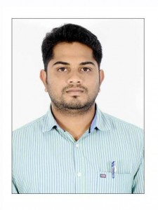 |
| Area of Research:Image Processing and Deep Learning |
| Email: gnvr1989@gmail.com |
| Supervisor: Dr. Suganya Devi K |
INTERNATIONAL JOURNALS
1. N V RajaReddy Goluguri, Suganya Devi K, HEMANTH KUMAR V, (2021),” Fine Tuning a Deep Convolutional Neural Network with Nature Inspired Cat Swarm Optimization in order to Categorize oryza Sativa Diseases, Journal of Tianjin University Science and Technology, Vol:54 Issue:12:2021, DOI: 10.17605/OSF.IO/KHX2W [Indexed: Scopus, Impact Factor: 1.1].
2. Goluguri, N. V. Raja Reddy, Suganya Devi, K. Srinivasan, P., (2020),”Rice-net: an efficient artificial fish swarm optimization applied deep convolutional neural network model for identifying the Oryza sativa diseases Neural Computing and Applications” Neural Computing and Applications, Springer, https://doi.org/10.1007/s00521-020- 05364- x. [Indexed: SCIE, Impact Factor: 4.774].
3. Goluguri, N. V. Raja Reddy, Suganya Devi, K.,Vadaparthi, Nagesh, (2020),”Image classifiers and image deep learning classifiers evolved in detection of Oryza sativa diseases: Survey” Artificial Intelligence Review, Springer, https://doi.org/10.1007/s10462-020-09849-y. [Indexed: SCIE,Impact Factor: 5.747]
| Area of Research: Computer Vision, Deep Learning, Medical Imaging |
| Email: hemanth_rs@cse.nits.ac.in |
| Supervisor: Dr. Suganya Devi K |
INTERNATIONAL JOURNALS
1. N V RajaReddy Goluguri, Suganya Devi K, Hemanth Kumar V, (2021),” Fine Tuning a Deep Convolutional Neural Network with Nature Inspired Cat Swarm Optimization in order to Categorize oryza Sativa Diseases, Journal of Tianjin University Science and Technology, Vol:54 Issue:12:2021, DOI: 10.17605/OSF.IO/KHX2W [Indexed: Scopus, Impact Factor: 1.1].
2. Vasireddi Hemant Kumar, K Suganya Devi, G N V RajaReddy.,(2021), “Deep feed forward neural network-based screening system for diabetic retinopathy severity classification using the lion optimization algorithm”, Graefes Arch Clin Exp Ophthalmol. 2021 Sep 10. doi: 10.1007/s00417-021-05375-x [Indexed: SCIE, Impact Factor: 3.117 ].
BOOK CHAPTERS
1. Hemanth Kumar Vasireddi, Suganya Devi. K., (2020)”An ideal big data architectural analysis for medical image data classification or clustering using the map-reduce framework”, Lecture notes in electrical engineering, ICCCE-2020, 978-981-15-7960-8, vol:698, Pages. 1481-1494, Springer, Singapore, https://doi.org/10.1007/978-981-15-7961-5_134. [Indexed: Scopus].
| Area of Research: Medical Image Classification using Deep Learning. |
| Email: arpita5102_rs@cse.nits.ac.in, arpita.csphd@gmail.com |
| Supervisor: Dr. Badal Soni |
| 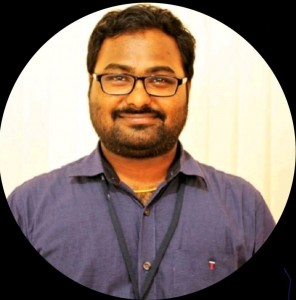 |
| Area of Research: Medical Image Processing using Machine Learning and Deep Learning |
| Email: anji_rs@cse.nits.ac.in |
| Supervisor: Dr. Badal Soni |
| Area of Research: Content-based Image Retrieval |
| Email: suraj_rs@cse.nits.ac.in |
|
Supervisor: Dr. Badal Soni |
| Area of Research: Visual Question Answering |
| Email: souvik21_rs@cse.nits.ac.in |
| Supervisor: Dr. Badal Soni |
| Area of Research: Video Segmentation, Video Processing for boundary detection |
| Email: chakraborty0007@gmail.com |
| Supervisor:Dr. Dalton Meitei Thounaojam |
| 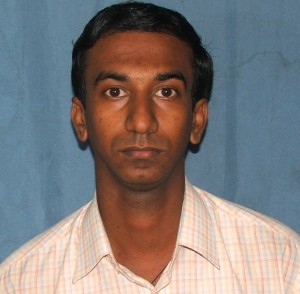 |
| Area of Research: Shot Boundary Detection in Video |
| Email: gautamtit2008@gmail.com |
| Supervisor:Dr. Dalton Meitei Thounaojam |
| 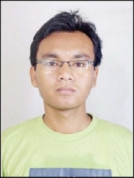 |
| Area of Research: Video Processing and Video Summarization |
| Email: bargad@cdac.in, bargadeori@gmail.com |
| Supervisor:Dr. Dalton Meitei Thounaojam |
| 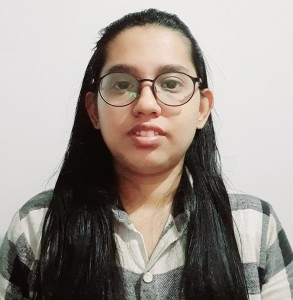 |
| Area of Research: Image Hashing |
| Email: moumita_rs@cse.nits.ac.in |
| Supervisor:Dr. Dalton Meitei Thounaojam |
| Co-Supervisor:Dr. Shyamosree Pal |
| Area of Research : Spiking Neural Networks |
| Email: irshed_rs@cse.nits.ac.in |
| Supervisor:Dr. Dalton Meitei Thounaojam |
Masters Students
| Area of Research: Automation Framework for the data validation and ensure consistency in the Enterprise Architect model |
| Email: karthic_pg@cse.nits.ac.in, karthicannadurai@gmail.com |
| Supervisor: Dr. Suganya Devi K |
| 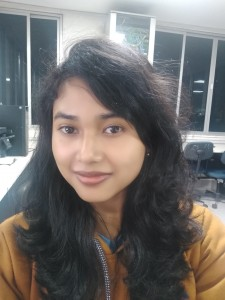 |
| Area of Research: Visual Question Answering |
| Email: doli_pg@cse.nits.ac.in |
| Supervisor: Dr. Badal Soni |
| Area of Research: Video Shot Boundary Detection |
| Email: indranathroy16@gmail.com, indranath_pg@cse.nits.ac.in |
| Supervisor:Dr. Dalton Meitei Thounaojam |
Alumnus
M.Tech
| Year of Passing: 2020 |
| Supervisor: Dr. Suganya Devi K |
| Email: nandm.b@gmail.com |
| Present Status: Associate-BAG (Data Scientist) at Affine Analytics Pvt. Ltd, Bangalore |
| Year of Passing: 2021 |
| Supervisor: Dr. Suganya Devi K |
| Email: gadde_pg@cse.nits.ac.in |
| Present Status: Systems Engineer at TCS |
B.Tech
| 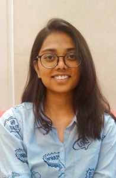 |
| Year of Passing :2020 |
| Supervisor: Dr. Suganya Devi K |
| Email:s.nivedita279@gmail.com |
| Present Status: Associate Data Scientist at MatrixCare by ResMed |
| 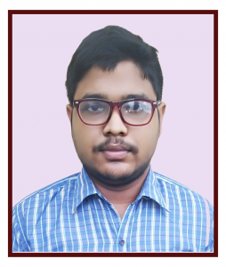 |
| Year of Passing: 2020 |
| Supervisor: Dr. Suganya Devi K |
| Email:pritam08031998@gmail.com |
| Present Status: Software Engineer in Make My Trip Pvt. Ltd |
| 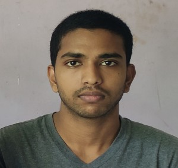 |
| Year of Passing: 2020 |
| Supervisor: Dr. Suganya Devi K |
| Email:dksah9584@gmail.com |
| Present Status: Preparing for GATE Exam. |
| 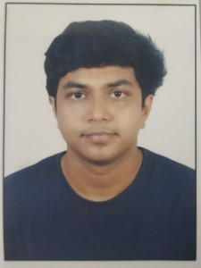 |
| Year of Passing: 2020 |
| Supervisor: Dr. Suganya Devi K |
| Email:tushar.baroi99@gmail.com |
| Present Status: R&D Senior Software Engineer at Huawei Technologies India Private Limited, Bangalore. |
| Year of Passing: 2021 |
| Supervisor: Dr. Suganya Devi K |
| Email: rayabhisek22@gmail.com |
| Present Status: Analyst (SDE1) at Goldman Sachs |
| 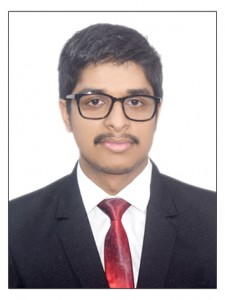 |
| Year of Passing: 2021 |
| Supervisor: Dr. Suganya Devi K |
| Email: manojeet24@gmail.com |
| Present Status: Software Engineer at Optum UHG (No.5 in Fortune 500 companies in the world) |
| 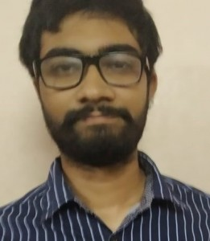 |
| Year of Passing: 2021 |
| Supervisor: Dr. Suganya Devi K |
| Email: padmanabha.bhatta4@gmail.com |
| Present Status: Technical Member at QTE department, D E Shaw India. |
| 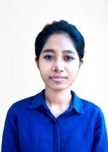 |
| Year of Passing: 2021 |
| Supervisor: Dr. Suganya Devi K |
| Email: usmitaboro.nits@gmail.com |
| Present Status: Information Systems Officer-Grade A at Indian Oil Corporation Limited. |
Research Labs
Multimedia & Image Processing Lab
| 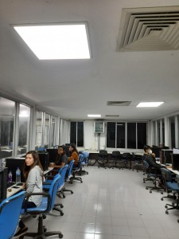 |
Faculty-in-charge: Dr. Badal Soni
The Multimedia and Image Processing (MIP) lab is engaged with research on image, language and text data processing.
- Modeling of Visual Question Answering System
- Modeling of Fake New Detection System from Text Data
- Breast Cancer Detection from CT Scan Images
- Image Copy-Move Forgery Detection
- Image Caption Generation
- Language Translation
Medical Imaging Lab
| 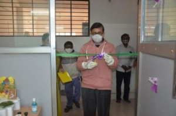 | 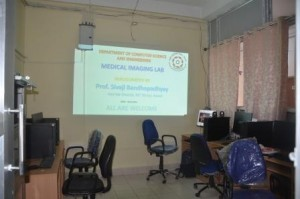 | 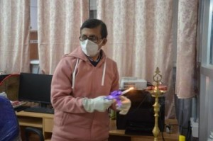 |
Faculty-in-charge: Dr. Suganya Devi K
About Us: Medical Imaging Lab is a research facility in the Computer Science and Engineering Department dedicated to Deep Learning, computer vision and Medical image processing applications. Research activities include: Co-segmentation, Re-identification, Learning strategies in Deep learning, Anomaly Detection, Data compression, Few shot learning, Distance metric learning, etc.
Current Research works:
- Early Diagnosis of Cancer using Deep Learning
- Blood smear analysis for anamoly detection.
- Blood Cancer Detection using flow cytometry
- Image retrieval using Compressive algorithms from signals
- Breast cancer detection using GANs
- Modelling system for Post operative care using Virtual Reality
- Modelling system for detecting Diabetic Retinopathy using XAI
Patents:
| Sl.No. | Name of Inventors | Title of patent | File number | Status |
| 1. | Suganya Devi K., P.Srinivasan, Sivaji Bandyopadhyay | Online Payment system and method | 201931025522 | Published |
| 2. | Suganya Devi K., P.Srinivasan, Sivaji Bandyopadhyay | Image based system for Detecting Plant Diseases | 201931046059 | Published |
| 3. | Suganya Devi K., Sivaji Bandyopadhyay, P.Srinivasan, Vadaparthi Nagesh, Golluguri N V RajaReddy | An Efficient Artificial Fish Swarm Optimization based method for Disease Detection in Oryza Sativa | Australian Patent 2021105554 | Granted |
Publications:
International Journals:
- VasireddiHemant Kumar, K/ Suganya Devi, G N V RajaReddy.,(2021), “Deep feed forward neural network-based screening system for diabetic retinopathy severity classification using the lion optimization algorithm”, Graefes Arch ClinExpOphthalmol. 2021 Sep 10. doi: 10.1007/s00417-021-05375-x
- BadalSoni, S. Roy and S. Warsi, “Particle Swarm Optimization in Bioinformatics, Image Processing, and Computational Linguistics” Published in International Journal of Swarm Intelligence Research (IJSIR), IGI Global, Vol. 12, issue 4, Note 2, 2021. DOI: 4018/IJSIR.2021100102
- Aasawari Sahasrabuddhe and LaiphrakpamDolendro Singh, “Multiple images encryption based on 3D scrambling and hyper-chaotic system”, Information Sciences, 550, pp. 252-267, March 2021, https://doi.org/10.1016/j.ins.2020.10.031
- Surajkanta, Y., Pal, S. A Digital Geometry-Based Fingerprint Matching Technique. Arab J SciEng 46, 4073–4086 (2021). https://doi.org/10.1007/s13369-021-05390-4
- LaiphrakpamDolendro Singh, WaikhomLeepeng Singh, Digambar Brahma, PratikshitBaruah, Sarthak Biswas, “Image compression-encryption scheme using SPIHT and chaotic systems”, Journal of Information Security and Applications, Volume 63, December 2021, 103010 , https://doi.org/10.1016/j.jisa.2021.103010
- BadalSoni, Angana Borah, Pidugu Naga Lakshmi Sowgandhi, PramodSarma, ErmyasFekaduShiferaw, “KTRICT A KAZE Feature Extraction: Tree and Random Projection Indexing-Based CBIR Technique” Published in International Journal of Multimedia Data Engineering and Management (IJMDEM), Vol. 11, issue-2, pp. 49-65, 2020
- Arnab Kumar Mishra, Sujit Kumar Das, Pinki Roy, SivajiBandyopadhyay, (2020)“Identifying COVID19 from Chest CT Images: A Deep Convolutional Neural Networks Based Approach”,Journal of Healthcare Engineering, Vol. 2020, Article ID 8843664, 7 pages, 2020. (SCIE, Scopus Indexed,IF: 2.682)
- Goluguri, N. V. Raja Reddy, Suganya Devi, K. Srinivasan, P., (2020),”Rice-net: an efficient artificial fish swarm optimization applied deep convolutional neural network model for identifying the Oryzasativa diseases Neural Computing and Applications” Neural Computing and Applications, Springer, https://doi.org/10.1007/s00521-020- 05364- x.
- Vaishnnave, M.P., Suganya Devi, K. &Ganeshkumar, P. ,(2020), “Automatic method for classification of groundnut diseases using deep convolutional neural network”. Soft Comput. https://doi.org/10.1007/s00500-020-04946-0. [Indexed: SCIE, Impact Factor: 3.050]
- Anji Reddy Vaka, BadalSoni, Sudheer Reddy K. “Breast cancer detection by leveraging Machine Learning” Published in Elsevier, Information & Communications Technology Express, 2020 https://doi.org/10.1016/j.icte.2020.04.009
- Suganya Devi, K., P. Srinivasan, SivajiBandyopadhyay, (2020), “H2K- A rubust and optimum approach for detection and classification of groundnut leaf diseases”, Journal of Computer and Electronics in Agriculture, Elsevier,Volume 178, 105749, ISSN 0168-1699, https://doi.org/10.1016/j.compag.2020.105749
- SaptarshiChakraborty, Dalton Meitei Thounaojam, Nidul Sinha, “A Shot boundary Detection Technique based on Visual Colour Information“, Multimedia Tools and Applications, vol. , pp. 1-16, 2020.
- SaptarshiChakraborty, Dalton Meitei Thounaojam, “SBD-Duo: a dual stage shot boundary detection technique robust to motion and illumination effect“, Multimedia Tools and Applications, vol. pp. 1-17, 2020.
- Satish Kumar Satti, SuganyaDevi,K., PrasenjitDhar, P. Srinivasan,(2020), “A machine learning approach for detecting and tracking road boundary lanes”, ICT Express, ISSN 405-9595, https://doi.org/10.1016/j.icte.2020.07.007.
- PrasenjitDhar, Suganya Devi, K., Satish Kumar Satti, P. Srinivasan,(2020), ” A study on various segmentation and machine learning algorithms used for early detection of cancer”, Journal of Advanced Research in Dynamical and Control Systems, Volume 12, Issue 6, Pages:1416-1432.
- IrshedHussain, Dalton Meitei Thounaojam, “SpiFoG: an efficient supervised learning algorithm for the network of spiking neurons“, Scientific Reports, vol. 10, p. 1-11, Nature Journal, 2020.
- Amit Kumar Trivedi, Dalton Meitei Thounaojam, Shyamosree Pal, “Non-Invertible cancellable fingerprint template for fingerprint biometric“, Computers & Security, vol. 90, pp. 101690, 2020
- Alok Singh, Dalton Meitei Thounaojam, SaptarshiChakraborty, “A novel automatic shot boundary detection algorithm: robust to illumination and motion effect“, Signal, Image and Video Processing, pp. 1-9, 2019.
- Satish Kumar Satti, Suganya Devi K, Vishnu Murthy, Srinivasan P, (2019), ‘Efficient Technique for removal of white and mixed noises in gray-scale images’, International journal of Innovative engineering and Management Research, Vol.8(9), pp.22-36.
- ArpitaBanik, ZebaShamsi and LaiphrakpamDolendro Singh, ”An encryption scheme for securing multiple medical images” Journal of Information Security and Applications, Vol. 49, pp. 1-8, 2019, DOI:https://doi.org/10.1016/j.jisa.2019.102398
- SaptarshiChakraborty, Dalton Meitei Thounaojam, “A novel shot boundary detection system using hybrid optimization technique”, Applied Intelligence, vol. 45, pp. 3207-3220, 2019.
- Satish Kumar Satti, Suganya Devi K, PrasenjitDhar, Srinivasan P, (2019), ‘An Efficient Noise separation technique for Removal of Gaussian and Mixed Noises in monochrome and color Images’, International Journal of Innovative Technology and Exploring Engineering, Vol.8(9), pp.588-601.
- BadalSoni, Anji Reddy. V, NareshBabuMuppalaneni, Candy Lalrempuii, “Image Forgery Detection using AKAZE Keypoint Feature Extraction and Trie Matching” Published in International Journal of Innovative Technology and Exploring Engineering, ISSN: 2278–3075 (Online) Volume-9 Issue-1, November 2019
- BadalSoni, Pradip K. Das, D. Meitei Thounaojam, “Geometric transformation invariant block-based copy-move forgery detection using fast and efficient hybrid local features”, Published in Elsevier, Journal of Information Security and Applications, 2019, DOI: https://doi.org/10.1016/j.jisa.2019.01.007 , Vol. 45, pp. 44-51
- Amit Kumar Trivedi, Dalton Meitei Thounaojam and Shyamosree Pal, “A robust and non-invertible fingerprint template for fingerprint matching system”, Forensic science international, vol. 288, pp. 256-265, 2018.
- LaiphrakpamDolendro Singh and KhumanthemManglem Singh, “Visually Meaningful Multi-image Encryption Scheme”, Arabian Journal for Science and Engineering, 2018, DOI: https://doi.org/10.1007/s13369-018-3104-7
- LaiphrakpamDolendro Singh and KhumanthemManglem Singh, “A robust image encryption scheme based on chaotic system and elliptic curve over finite field”, Multimedia Tools Application, Vol. 77, pp. 8629–8652, 2018, DOI: https://doi.org/10.1007/s11042-017-4755-1
- . Jayachitra,S. Matilda ,Suganya Devi K., Padmanabhan Srinivasan, (2018), “Survey on the good, the bad and the ugly face recognition techniques” , International Journal of Pure and Applied Mathematics, 119(14):1243-1252.
- P.Vaishnnave, Suganya Devi, K., Srinivasan, P., (2018), ‘A Study on Deep Learning models for Satellite Imagery’, International Journal of Applied Engineering Research, Vol. 14(4), pp.881-887.
- ArunKumar, Suganya Devi, K.,(2018), ‘Fusing the multimodal image by simple average, simple minimum, simple maximum, PCA, DWT methods of Image fusion – A review’ International Journal of Advanced Research, Ideas and innovations in Technology, Vol. 4(3), pp. 527-529.
- Kanimozhi, A., Kannan, Suganya Devi(2018), ‘Secure Cloud Based E-Learning System With Access Control And Group Key Mechanism’ Concurrency and Computation: Practice and Experience, https://doi.org/10.1002/cpe.4841.
- LaiphrakpamDolendro Singh and KhumanthemManglem Singh, “Medical image encryption based on improved ElGamal encryption technique”, Optik, Vol. 147, pp. 88-102, 2018, DOI: http://dx.doi.org/10.1016/j.ijleo.2017.08.028
- Trivedi, Amit Kumar, et al. “A Robust and Non-Invertible Fingerprint Template for Fingerprint Matching System.” Forensic Science International, vol. 288, July 2018, pp. 256–65. DOI.org (Crossref), https://doi.org/10.1016/j.forsciint.2018.04.045.
- BadalSoni, Pradip K. Das, D. Meitei Thounaojam, “Keypoints based enhanced multiple copy-move forgeries detection system using density-based spatial clustering of application with noise clustering algorithm”, Published in IET Journal of Image Processing, 2018, DOI: 10.1049/iet-ipr.2018.5576 , Print ISSN 1751-9659, Online ISSN 1751-9667 (SCI)(Online).
- BadalSoni, Angshuman Bora, Arpita Ghosh, and Anji Reddy, “RFSVM: A Novel Classification Technique for Breast Cancer Diagnosis”, Published in ‘International Journal of Innovative Technology and Exploring Engineering (IJITEE)’, ISSN: 2278–3075 (Online), Volume-8 Issue-12, October 2019, Page No. 3295-330 (Scopus+ESCI)(Online).
- NileshDilipkumarGharde, D. Meitei Thounaojam, BadalSoni, Saroj Kr. Biswas, “Robust perceptual image hashing using fuzzy color histogram”, Published in Multimedia Tools and Applications, Springer, Jun 2018, https://doi.org/10.1007/s11042-018-6115-1, Vol. 77, issue 23, pp 30815–30840 (SCI)(Online).
- BadalSoni, Pradip K. Das, and D. Meitei Thounaojam, “Dual System for Copy-move Forgery Detection using Block-based LBP-HF and FWHT Features,” Engineering Letters, vol. 26, no.1, pp. 171-180, 2018(ESCI + Scopus) (Online).
- BadalSoni, Pradip K. Das, Dalton Meitei Thounaojam, “CMFD: A detailed review of block based and key feature based techniques in image copy-move forgery detection”, Published in IET Journal of Image Processing, 2017, DOI: 10.1049/iet-ipr.2017.0441, ISSN:1751-9667, Vol.12, issue:2, pp.167-178 (SCI)(Online).
- LaiphrakpamDolendro Singh and KhumanthemManglem Singh, “Cryptanalysis of symmetric key image encryption using chaotic Rossler system”, Optik, Vol. 135, pp. 200-209, 2017, DOI: http://dx.doi.org/10.1016/j.ijleo.2017.01.062
- LaiphrakpamDolendro Singh and KhumanthemManglem Singh, “Cryptanalysis of Image Encryption Scheme Based on Chaotic Tent Map”, Int. Journal of Precious Engineering Research and Application, Vol. 1, Issue 2, 2016, pp.18-22.
- LaiphrakpamDolendro Singh and KhumanthemManglem Singh, “Image Encryption using Elliptic Curve Cryptography”, Procedia Computer Science, Vol. 54, pp. 472 – 481, 2015.
- Suganya Devi. K., Srinivasan, P., (2015), ‘A Novel approach for Facial Expression analysis in real time applications in real time applications using SIFT flow and SVM’, Australian Journal of Basic and Applied Sciences, 9(21) , Pages: 1-6.
Conferences:
- Suganya Devi K., Sekar K., Singh N., Baroi S.J., Sah D.K., Borahi K. (2022) Detection of Abnormalities in Mammograms Using Deep Convolutional Neural Networks. In: Das K.N., Das D., Ray A.K., Suganthan P.N. (eds) Proceedings of the International Conference on Computational Intelligence and Sustainable Technologies. Algorithms for Intelligent Systems. Springer, Singapore. https://doi.org/10.1007/978-981-16-6893-7_37 .
- Arpita Ghosh, BadalSoni, UjwalaBaruah and R. Murugan, “Classification of Brain Hemorrhage using Fine Tuned Transfer Learning”, 3rd International Conference on Machine Intelligence and Signal Processing(MISP-2021) organized by NIT Arunachal Pradesh, India, during 23-25 September 2021 (Accepted).
- Eduri Raja and BadalSoni, “Stand-Alone Bidirectional Encoder Representations from Transformers based Fake News Detection Model”, International Conference on Computational Intelligence & Sustainable Technologies, Jointly organized by NIT Sikkim and NIT Silchar, India, during 28-30 October 2021(Accepted).
- S. Mishra , A. Dwivedi , BadalSoni, “Foggy Image Enhancement Using Improved Histogram Equalization and Guided Filter”, In International Conference on Smart and Intelligent Systems (SIS 2021), VRSEC, Andhra Pradesh, during 25-26 February 2021 (Online)
- PrachiMathur and BadalSoni, “Exploring Color Models for Enhancement of Underwater Image” In Data Driven Approach towards Disruptive Technologies, Springer Singapore, ISBN 978-981-15-9873-9, https://doi.org/10.1007/978-981-15-9873-9_26, 2021 (Online).
- BadalSoni and PrachiMathur “An Improved Image Dehazing Technique using CLAHE and Guided Filter”, Published by IEEE 7th International Conference on Signal Processing & Integrated Networks, (SPIN) February 27-28, 2020 (Online).
- Satti S.K., Suganya Devi K., Dhar P., Srinivasan P., (2020) Enhancing and Classifying Traffic Signs Using Computer Vision and Deep Convolutional Neural Network, Machine Learning, Image Processing, Network Security and Data Sciences. MIND 2020. Communications in Computer and Information Science, vol 1240. Springer, Singapore. https://doi.org/10.1007/978-981-15-6315-7_20.
- Ayush Kumar and BadalSoni (2020), “A ConvNet Based Procedure for Image Copy-Move Forgery Detection”. In: Bhattacharjee A., Borgohain S., Soni B., Verma G., GaoXZ. (eds) Machine Learning; Image Processing, Network Security and Data Sciences. MIND 2020. Communications in Computer and Information Science, vol 1240. Springer, Singapore (Online)
- Barman R., Biswas S.K., Sarkar S., Purkayastha B., Soni B. (2020) Image Processing Using Case-Based Reasoning: A Survey. In: Mallick P.K., Meher P., Majumder A., Das S.K. (eds) Electronic Systems and Intelligent Computing. Lecture Notes in Electrical Engineering, vol 686. Springer, Singapore (Online).
- PranitaBaro, Malaya Dutta Borah and SushantaMukhopadhyay, “Empirical Analysis on the Effect of Image Compression and Denoising using different wavelets on Iris Recognition”,International Conference on Computational Intelligence, Security &IoT (ICCISIoT) 2019, Springer CCIS Series (Scopus Indexed), National Institute of Technology, Agartala, India, , December13-14, 2019, pp. 373–386, Online 2020, DOI:10.1007/978-981-15-3666-3_30.
- Rajib Kumar Jha, BadalSoni, Sumit Kumar, Vivek S Verma,”Radon Transform and Dynamic Stochastic Resonance based Technique for Line Detection from Noisy Image”, Published in 25th International Conference on Noise and Fluctuations (ICNF 2019), held in Neuchâtel (Switzerland), from June 18 to June 21, 2019.
- IntelliSys-2019,London, United Kingdom, “Genetic Algorithm Based Selection of Appropriate Biomarkers for Improved Breast Cancer Prediction”, 05-06 September 2019,
- Satish Kumar Satti, Suganya Devi K., Vishnu Murthy, Srinivasan P, (2019), ‘Efficient Technique for removal of white and mixed noises in gray-scale images’, Elsevier-International Conference on Innovations in Science and Engineering (ICISE-2K19), August 31, 2019, pp.18.
- M.P.Vaishnnave, K.Suganya Devi, P.Srinivasan, G.Arutperumjothi, (2019), “Detection and Classification of Groundnut Leaf Diseases using KNN classifier,” 2019 IEEE International Conference on System, Computation, Automation and Networking (ICSCAN), Pondicherry, India, 2019, pp. 1-5, https://doi: 10.1109/ICSCAN.2019.8878733.’,
- M.P.Vaishnnave, K.Suganya Devi, G.Arutperumjothi, P.Srinivasan, (2019)’Analysis of Castor Plant Diseases Using SVM& deep CNN Technique’, IEEE international Conference on Recent Advances in Energy-efficient Computing and Communication (ICRAECC 2019), March 7-8, 2019.
- Debalina Biswas and BadalSoni, “Image Dehazing using Contrast Limited Adaptive Histogram Equalization and Guided Filter”, Accepted in IEEE International Conference on Vision Towards Emerging Trends in Communication and Networking (ViTECoN’19) held on 30-31 March 2019 at Vellore Institute of Technology, Vellore, India.
- PrachiMathur and BadalSoni, “Hybrid Underwater Image Enhancement Technique: A Comparative Study using Different Color Models”, Accepted in IEEE International Conference on Vision Towards Emerging Trends in Communication and Networking (ViTECoN’19) to be held on 30-31 March 2019 at Vellore Institute of Technology, Vellore, India.
- Debalina Biswas and BadalSoni, “Foggy Image Enhancement using Modified Adaptive Histogram Equalization and Guided Filter”, Accepted in Springer, International Conference on Machine Learning, Image Processing, Network Security and Data Sciences, to be held on 3-4 March 2019, NIT Kurukshetra, India.
- RajibJha, BadalSoni, and Sumit Kumar, “A Combined LoG and Dynamic Stochastic Resonance Based Technique for Edge Detection from Noisy Images”, Accepted in IEEE International Conference on Recent Advances in Computational Systems organized by the IEEE Kerala Section, to be held during December 6-8, 2018.
- PrachiMathur, Kanasani Monica and BadalSoni, “Improved Fusion-based Technique for Underwater Image Enhancement”, Published in IEEE, 4th International Conference on Computing Communication and Automation (ICCCA), to be held on 14-15 December 2018, Noida, India (Online).
- BadalSoni, Pradip K. Das, Dalton Meitei Thounaojam and Debalina Biswas, “Copy-Move Attack Detection from Digital Images: An Image Forensic Approach”, Accepted in Springer, 6th International Conference of Advanced Computing, Networking and Informatics, to be held on 4-6th June 2018, Assam, India.
- BadalSoni, Pradip K. Das, Dalton Meitei Thounaojam, “multiCMFD: fast and efficient system for multiple copy-move forgeries detection in image”, Published in ACM, International Conference on Image and Graphics Processing (ICIGP 2018), Hong Kong, February 24-26, 2018 (Online).
- BadalSoni, Debalina Biswas, “Image Forensic using Block-based Copy-move Forgery Detection”, Published in IEEE, Fifth International Conference on Signal Processing & Integrated Networks, SPIN 2018, Delhi, India(Online).
- BadalSoni, Pradip K. Das, Dalton Meitei Thounaojam, “Improved Block-based Technique using SURF and FAST Keypoints Matching for Copy-Move Attack Detection”, Published in IEEE, Fifth International Conference on Signal Processing & Integrated Networks, SPIN 2018, Delhi, India (Online).
- BadalSoni, Pradip K. Das, Dalton Meitei Thounaojam, “An Efficient Block Phase Correlation Approach for CMFD System”, Accepted in International Conference on Computing, Analytics and Networking (ICCAN 2017), To be published in Springer, 15-16 Dec 2017, KIIT University, Bhubaneswar, Odisha, India (Online).
- BadalSoni, Pradip K. Das, Dalton Meitei Thounaojam, “Copy-Move Tampering Detection based on Local Binary Pattern Histogram Fourier Feature”, Accepted in International Conference on Computer and Communication Technology, (ICCCT-2017), Published in ACM digital library (ISBN: 978-1-4503-5324-3), 24-26 Nov 2017, MNNIT Allahabad, India (Online).
- BadalSoni, Pradip K. Das, Dalton Meitei Thounaojam, “Blur Invariant Block based Copy-Move Forgery Detection Technique using FWHT Features”, International Conference on Watermarking and Image Processing (ICWIP-2017), Published in ACM Digital Library, ISBN: 978-1-4503-5307-6, 6-8 Sept 2017, Paris, France (Online).
- Jayachitra J., Suganya Devi K., Vaiyshnavi M P., and Srinivasan P.,(2017), “GBU based face recognition techniques: A review,” 2017 4th International Conference on Advanced Computing and Communication Systems (ICACCS), Coimbatore, pp. 1-4, https://doi: 10.1109/ICACCS.2017.8014656.
- KiranSonavane, BadalSoni, “Optimization of multiple sequence alignment (MSA) using invariant code extraction and static thread scheduling”, Published in IEEE International Conference for Convergence in Technology (I2CT), 2017, DOI: 10.1109/I2CT.2017.8226313, Mumbai, India (Online).
- AnanyaSenGupta, Dalton Meitei Thounaojam, KhManglem Singh, Sudipta Roy, “Video shot boundary detection: A review”, in International Conference on Electrical, Computer and Communication Technologies, pp. 1-6, IEEE, 2015.
- HidangmayumSaxena Devi, RomeshLaishram, Dalton Meitei Thounaojam, “Face recognition using R-KDA with non-linear SVM for multi-view database”, in Procedia Computer Science, vol. 54, pp. 532-541, Elsevier, 2015.
- BargaDeori and Dalton Meitei Thounaojam, “Extended Kalman Filtering based Multiple Object Tracking in Image Sequences”, in International conference on ICISP, pp. 315-323, Elsevier book, 2014.
- Onkar Krishna, RajibJha, Anil Tiwari, BadalSoni “Noise-Induced Segmentation of Noisy Color Image” 19th IEEE National Conference on Communications (NCC-2013), pp. 1-5, held at Indian Institute of Technology Delhi on February 15-17, 2013 (Online).
Books Published:
| 1. | Problem Solving and Python Programming – Dr. Suganya Devi K | VK Publishers | 2019 |
| 2. | Information Retrieval: Models and Concepts – Dr. Badal Soni & Dr. Suganya Devi K | Wiley Publishers | 2021 |
Book Chapters Publised:
Year: 2021
- Suganya Devi K., Arutperumjothi G., Srinivasan P. (2021) Diagnosis Evaluation and Interpretation of Qualitative Abnormalities in Peripheral Blood Smear Images—A Review. In: Patgiri R., Biswas A., Roy P. (eds) Health Informatics: A Computational Perspective in Healthcare. Studies in Computational Intelligence, vol 932. Springer, Singapore. https://doi.org/10.1007/978-981-15-9735-0_17[Indexed: SCI]
- Dhar P., Suganya Devi K., Satti S.K., Srinivasan P. (2021) Detail Study of Different Algorithms for Early Detection of Cancer. In: Patgiri R., Biswas A., Roy P. (eds) Health Informatics: A Computational Perspective in Healthcare. Studies in Computational Intelligence, vol 932. Springer, Singapore. https://doi.org/10.1007/978-981-15-9735-0_12[Indexed: SCI]
- Arpita Ghosh and Badal Soni (2021)”An Automatic Tumor Identification Process to Classify MRI Brain Images”, In: Verma G.K., Soni B., Bourennane S., Ramos A.C.B. (eds) Data Science. Transactions on Computer Systems and Networks. Springer, Singapore. https://doi.org/10.1007/978-981-16-1681-5_20, 2021(Online).
- Soni B., Mathur P., Bora A. (2021), “In Depth Analysis, Applications and Future Issues of Artificial Neural Network”. In: Hassanien AE., Taha M.H.N., Khalifa N.E.M. (eds) Enabling AI Applications in Data Science. Studies in Computational Intelligence, vol 911. Springer, Cham. https://doi.org/10.1007/978-3-030-52067-0_7 (Online).
- Soni B., Suganya Devi K., Bora A. (2021), “An Automatic Classification of Genetic Mutations by Exploring Different Classifiers”. In: Hassanien AE., Taha M.H.N., Khalifa N.E.M. (eds) Enabling AI Applications in Data Science. Studies in Computational Intelligence, vol 911. Springer, Cham. https://doi.org/10.1007/978-3-030-52067-0_5 (Online).
Year: 2020
- Hemanth Kumar Vasireddi, Suganya Devi. K., (2020)”An ideal big data architectural analysis for medical image data classification or clustering using the map-reduce framework”, Lecture notes in electrical engineering, ICCCE-2020, 978-981-15-7960-8, vol:698, Pages. 1481-1494, Springer, Singapore, https://doi.org/10.1007/978-981-15-7961-5_134. [Indexed: Scopus]
- Badal Soni, Pradip K Das, Dalton Meitei Thounaojam, Debalina Biswas, “Copy–Move Attack Detection from Digital Images: An Image Forensic Approach”, in Smart Computing Paradigms: New Progresses and Challenges, pp. 69-76, 2020.
- Badal Soni, Ujwala Baruah, “Enhanced Image Dehazing Procedure using CLAHE and Guided Filter”, In Applied Intelligent Decision Making in Machine Learning, ISBN 9780367503369, CRC Press, November 18, 2020.
- Anji Reddy .V and Badal Soni (2020), “Breast Cancer Identification and Diagnosis Techniques,” In Machine Learning for Intelligent Decision Science Algorithms for Intelligent Systems, DOI: 10.1007/978-981-15-3689-2, Springer, Singapore (Online).
- Badal Soni , Das P.K., Thounaojam D.M., Biswas D. (2020), “Copy–Move Attack Detection from Digital Images: An Image Forensic Approach,” Smart Computing Paradigms: New Progresses and Challenges. Advances in Intelligent Systems and Computing, vol 766. Springer, Singapore (Online)
Year: 2019
12. Manas Jyoti Gogoi, Amit Kumar Trivedi, Dalton Meitei Thounaojam, Aniruddha Bhattarchajee, Rahul Debnath, Kaushik Borah,”Ring Partition-Based Fingerprint Indexing Algorithm”, in International Conference on Machine Intelligence and Signal Processing, pp. 1-12, 2019.
Year: 2018
13. Badal Soni, Pradip K. Das and Dalton Meitei Thounaojam, “An Efficient Block Phase Correlation Approach for CMFD System”, Proceedings of Progress in Computing, Analytics and Networking, Springer, Singapore, pp. 41-49, 2018. https://doi.org/10.1007/978-981-10-7871-2_5
14. Badal Soni, Pradip K. Das, D. Meitei Thounaojam (2018), “An Efficient Block Phase Correlation Approach for CMFD System,” In: Pattnaik P., Rautaray S., Das H., Nayak J. (eds) Progress in Computing, Analytics and Networking, Advances in Intelligent Systems and Computing, vol 710, Springer, Singapore (Online).
Year: 2013
- Dalton Meitei Thounaojam, Amit Trivedi, Kh. Manglem Singh and Sudipta Roy, “A Survey on Video Segmentation”, Proceedings of the International Conference on Advanced Computing, Networking, and Informatics, India, pp. 903-912, June 2013, DOI= 10.1007/978-81-322-1665-0_91
Year: 2012
- Rajib Kumar Jha, Badal Soni, Rajlaxmi Chouhan, Kiyoharu Aizawa, “Improved Watermark Extraction from Audio Signals by Scaling of Internal Noise in DCT Domain,” Published in Advances in Computer Science, Engineering & Applications, Advances in Intelligent and Soft Computing, Springer-Verlag, 2012, vol. 166, pp. 235-243, DOI: 10.1007/978-3-642-30157-5_24 (Online).